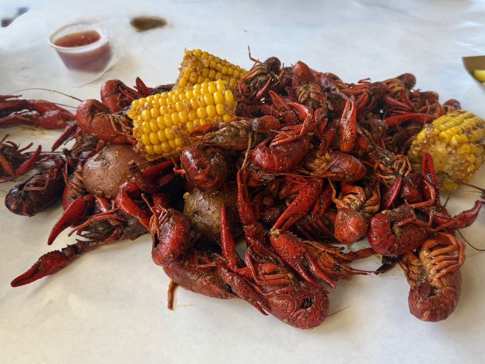

Seafood boils
Snow crab, shrimp, mussels, corn and potatoes boiled in your choice of seasoning and spice level.
HoursMon Closed
Seafood boils · Bastrop, TX

Snow crab, shrimp, mussels and fried baskets, boiled your way.
What's on the table
Order these first.
Snow crab, shrimp, mussels, corn and potatoes boiled in your choice of seasoning and spice level.

Fried shrimp, catfish, popcorn shrimp and soft shell crab, piled in a red checkered basket with fries.

Whole crab and seasoned shrimp, glossy with sauce and packed with flavor.

Choose your seasoning and spice


4.5 ★ from 104 Google reviews
Had such a great experience here! The food was absolutely delicious, especially the seafood fresh, flavorful, and seasoned perfectly. You can tell they really care about the quality of what they serve. The Cajun / Asian flavors were on point, the portions were great, and everything came out tasting amazing. The atmosphere is fun and welcoming, and the service made the experience even better.
Had such a great experience here! The food was absolutely delicious, especially the seafood fresh, flavorful, and seasoned perfectly. You can tell they really care about the quality of what they serve. The Cajun / Asian flavors were on point, the portions were great, and everything came out tasting amazing. The atmosphere is fun and welcoming, and the service made the experience even better.
Had an awesome experience here! The snow crab and shrimp were packed with flavor, also insanely fresh and the seasoning was perfect. We ordered the chef’s special seasoning on the boil, spicy for the spice level. We also order the fried shrimp basket, fried stuff jalapeños and the fried soft shell crab.. THE BEST!!! The atmosphere was really nice, chill, and inviting. Definitely a spot I’ll be coming back to.
I had been craving seafood for months, so I finally made it out. The food was so amazing! Me and my friend got the regular Cajun snow crab legs with mussels, corn, and potatoes. Everything was juicy and seasoned well. The lady at the counter was extremely nice and kept checking on us as well.

Our story
A casual, communal room with picnic tables, wood floors and a big blue and coral mural. You eat off paper, with your hands.
Friendly counter staff, full plates, and pickup orders through the online menu.
Come by
904 College St, Bastrop, TX 78602
Closed Monday and Tuesday. Order pickup online or call ahead.